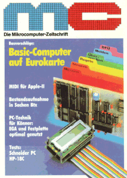
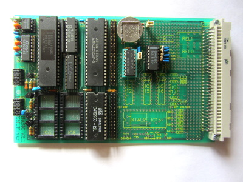
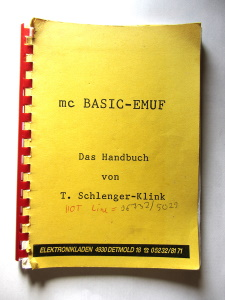
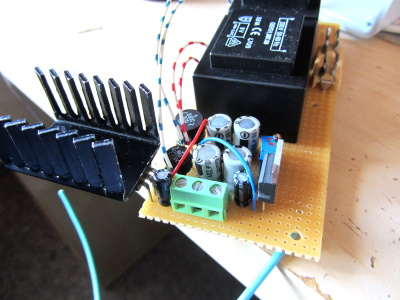
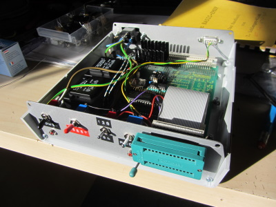
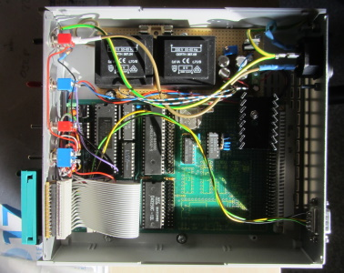
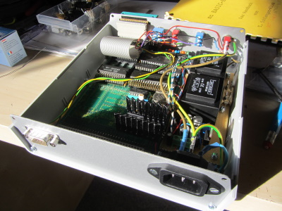

In 1981 the german magazine "MC" ("Die Mikrocomputer-Zeitschrift") published their first single board computer named "EMUF". EMUF is an abbreviation for "Einplatinen-Mikrocomputer für universelle Festprogrammierung" ("Single Board Computer for Universal, Definite Programming"), which means they were designed to be programmed to fulfill a specific task. The first EMUF used a 6504 processor, while others using the Z80, 6802, 6502, 68008 or 8086 followed. Because they were comparatively cheap, well documented and easy to use they were very popular among hobbyists.
This so called "Basic-EMUF" uses an 8052AH-BASIC microcontroller, which has a BASIC-interpreter programmed into its ROM, which communicates over a RS-232 serial interface. What is special about this single board computer is its ability to program EPROM's on-board. You can store and load several previously entered BASIC-programs on it, just like storing data on cassette. Additionally, the computer features a real time clock, several inputs and outputs as well as analog I/O. It even came with its original manual! You can view the original magazine article by clicking here (The article starts on page 46).
  To get the computer up and running, I started with building the power supply. The computer needs +5V for all integrated circuits as well as +12,5V (or +21V, depending on the EPROM type) to program the EPROM. I used a 9V transformer, a full bridge rectifier and a 7805 linear voltage regulator to generate +5V. +12,5V is generated similarly, but using a 24V transformer and a LM317 instead. This way I can manually adjust the programming voltage and program even +21V EPROM's.
Finally, I mounted the EMUF and the power supply in a small case. I drilled holes for the frontplate and the backplate and mounted ports and switches. The EPROM socket is accessible from the front, while the serial interface as well as the power plug is accessible from the back. I also installed switches to reset the system, choose the EPROM type and disable EPROM programming.
  After power-up you have to press the space bar, so the computer can determine the baud rate. After that, you are ready to go! The basic interpreter features many commands co control the computer; here are just a few examples:
I have already programmed a small program into EPROM before, by typing in "ROM 1" I select the first program stored in EPROM. If I now type in "LIST", the program is listed to the console and I then transfer the program into RAM by typing in "XFER". Now I select the RAM by typing in "RAM", list the program again to check that everything is alright and then start the program by typing in "RUN". The program is stopped by hitting CTRL+C.
This page was last modified .